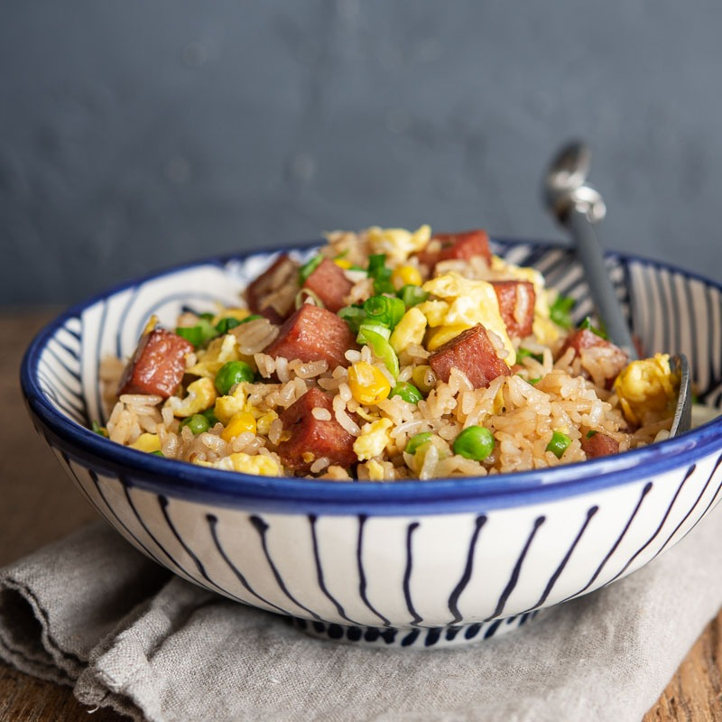

Spam Fried Rice

Description
A quick and easy dish that can be made with
any meat or veggies that you have on hand. It's
the perfect clean-out-the-fridge meal!
Ingredients
- 2 tablespoons vegetable oil, divided
- 2 large eggs, beaten
- 2 cloves garlic, minced
- 6 ounces Spam, diced
- 1/2 cup frozen corn
- 1/2 cup frozen peas
- 1/2 cup frozen diced carrots
- 3 cups cooked rice
- 1 1/2 tablespoons soy sauce
- 1/2 tablespoon fish sauce
- 1/4 teaspoon sesame oil
- 1/4 teaspoon white pepper
- 2 green onions, sliced
- Sriracha, for serving
Steps
- Heat 1 tablespoon vegetable oil in a large
skillet over low heat. Add eggs and cook until
cooked through, about 2-3 minutes per side,
flipping only once. Let cool before dicing into
small pieces.
- Heat remaining 1 tablespoon vegetable oil in the
skillet over medium high heat. Add garlic and
Spam, and cook, stirring often, until light
golden brown, about 3-4 minutes.
- Add corn, peas, and carrots. Cook, stirring
constantly, until vegetables are tender, about
1-2 minutes.
- Add rice and gently toos to combine.
- Add soy sauce fish sauce, sesame oil, and white
pepper. Cook, stirring constantly, until heated
through, about 1-2 minutes.
- Stir in green onions and eggs.
- Serve immediately, drizzlede with Sriracha, if
desired.